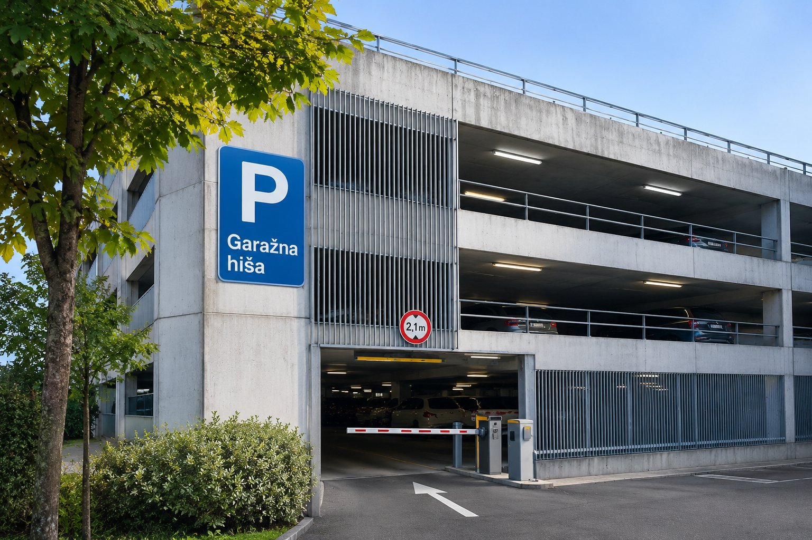

Vir: simbolična slika garažne hiše, ustvarjena z umetno inteligenco (ChatGPT, 2026).
Ulica: Partizanska cesta 23
Mesto: Maribor
Poštna številka: 2000
Leto izgradnje: 1986
Površina: 668,5 m2
Namembnost: parkirišče
Projektant: Ela H.